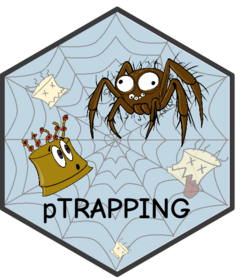

Bubble plot of differential expression across treatments
Source:R/ptrap_bubble.R
ptrap_bubble.RdDisplays genes of interest (y-axis) against treatment conditions (x-axis) as a bubble plot. Circle fill encodes the log2 fold change (logFC) via a continuous colour gradient, and circle size encodes statistical significance as \(-\log_{10}(\mathrm{FDR})\) (default) or \(-\log_{10}(p\text{-value})\).
Arguments
- de_result
A data frame of combined results from one or more calls to
ptrap_de(). Fortest_method = "paired.ttest", use the$resultscomponent of each and combine them withdplyr::bind_rows(). Must contain columns for gene names, treatment,logFC,FDR, andPValue.- sig_size
Character. Which column to use for the size aesthetic (displayed as \(-\log_{10}\)). Either
"FDR"(default) or"PValue".- colors_lfc
Character vector of at least three colours defining the fill gradient mapped to logFC values. Passed to
ggplot2::scale_fill_gradientn(). Default:c("#25599b", "#ABD0DD", "#F2F9FE", "#F88705", "#B8351F").- gene_col
Name of the column containing gene identifiers. Default
"Gene".- treatment_col
Name of the column containing the treatment label. Default
"treatment".- size_range
Numeric vector of length two controlling the minimum and maximum point sizes. Passed to
ggplot2::scale_size_continuous(). Defaultc(2, 12).- point_alpha
Opacity of the bubbles. Default
0.9.- title
Optional plot title. If
NULL(default), no title is added.- interactive
Logical. If
TRUE, returns an interactiveplotly::ggplotly()object with hover tooltips showing gene name, logFC, p-value, and FDR. DefaultFALSE.
Value
A ggplot2::ggplot() object, or a plotly object when
interactive = TRUE.
Details
This is particularly useful after running ptrap_de() for
multiple treatment conditions (e.g., PACAP and BDNF) on the same set of
genes: bind the $results tibbles together with dplyr::bind_rows() and
pass the combined data frame to ptrap_bubble().
Examples
if (FALSE) { # \dontrun{
# Run DE for two treatments on the same gene set
pacap_de <- ptrap_de(counts, ..., treatment_name = "PACAP",
genes.filter = my_genes)
bdnf_de <- ptrap_de(counts, ..., treatment_name = "BDNF",
genes.filter = my_genes)
# Combine results and plot
library(dplyr)
bind_rows(pacap_de$results, bdnf_de$results) |>
ptrap_bubble()
# Use raw p-values for size and a custom colour palette
bind_rows(pacap_de$results, bdnf_de$results) |>
ptrap_bubble(sig_size = "PValue",
colors_lfc = c("blue", "white", "red"))
# Interactive with hover tooltips
bind_rows(pacap_de$results, bdnf_de$results) |>
ptrap_bubble(interactive = TRUE)
} # }